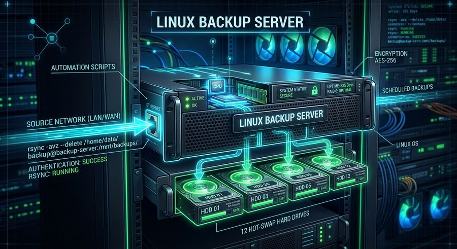

Project 02
Linux Backup Server

Waarover gaat dit project?
Bij dit project staat het maken van back-ups centraal. Het idee is om bestanden op een Linux-server veilig te bewaren en het kopiëren ervan zo veel mogelijk automatisch te laten verlopen.
Wat komt erbij kijken?
- Een Linux-omgeving gebruiken als back-upserver.
- Bekijken hoe bestanden met rsync gekopieerd kunnen worden.
- Nadenken over een vast schema en controleren of de back-ups goed zijn uitgevoerd.
Wat heb ik geleerd?
Ik heb meer inzicht gekregen in het belang van regelmatige back-ups. Ook leerde ik dat automatiseren tijd bespaart, maar dat je achteraf nog altijd moet controleren of alles correct is verlopen.